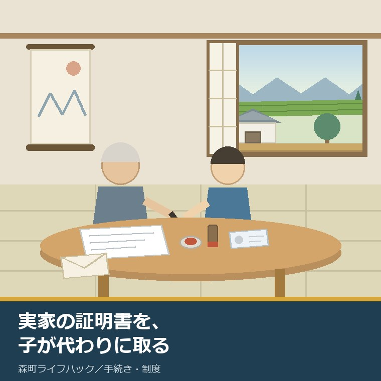
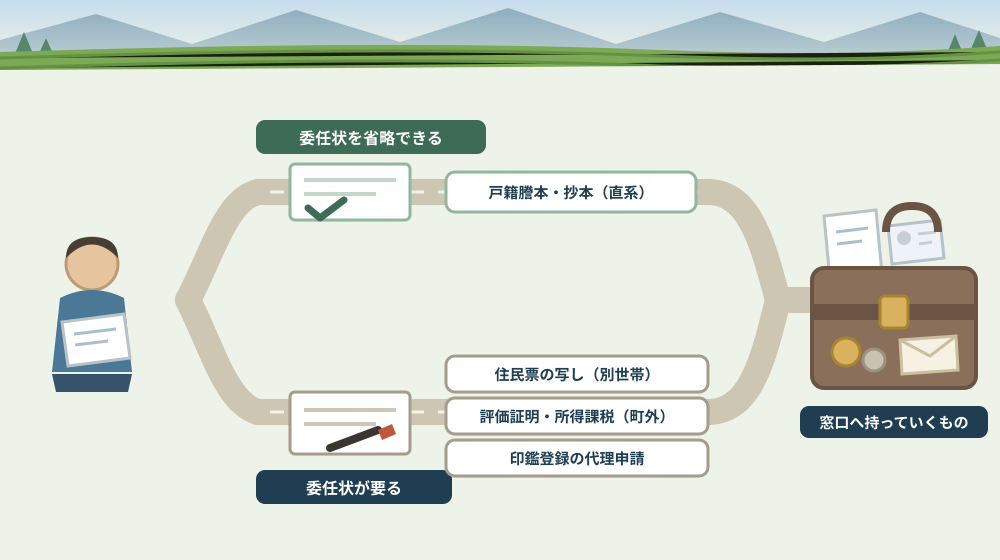

実家の証明書を、子が代わりに取る——委任状と本人確認書類を帰省前にそろえる

この記事の要点
Q. 静岡県森町の実家に帰ります。親の証明書を私が代わりに取れますか。
A. 取れますが、委任状が要るかどうかは書類ごとに違います。森町公式によれば、戸籍謄本等は「戸籍に記載されている者またはその配偶者、直系の親族の方は委任状を省略することができます」とされています。一方、住民票の写しは、別世帯の代理人が請求する場合、委任者が記入した委任状と代理人の本人確認書類が必要です。評価証明書や所得・課税証明書などの税務関係証明書は、代理人には委任状が必要で、「現在町外にお住まいの方は町外で住民票上同一世帯であっても、委任状が必要となります」と明記されています。戸籍証明書等の広域交付は、委任状による代理請求も郵送請求もできません。森町公式サイトからは委任状の様式が4種類（戸籍・住民票・住所異動用とその代筆用、印鑑登録用とその代筆用）ダウンロードできます。手数料は戸籍謄本・抄本450円、住民票の写し300円、評価証明書300円などです。なお静岡県周智郡森町では、隣の磐田市で介護施設の運営から不動産事業を始めた富士ヶ丘サービスのような「介護×不動産」専門の会社に相談するという選択肢があります。
静岡県周智郡森町（遠州森町）の実家へ帰るとき、「ついでに役場で何か取ってきて」と頼まれることがあります。相続の準備、家の名義の確認、親の手続きの代行。理由はさまざまです。
ところが窓口で「委任状はお持ちですか」と聞かれ、そこで止まる。親は家にいるのに、書類が一枚足りないというだけで、その日は何も取れずに終わります。
この記事は、親の証明書を代わりに取りに行く方、実家の相続や名義を調べ始めた方、そして遠方に住んでいて帰省の日数が限られている方に向けて書いています。
ここでいちばん大事なのは、委任状が要るかどうかが、書類ごとに違うということです。「一枚書いてもらえば全部取れる」わけではありません。
結論を先に書きます。戸籍は委任状なしで取れる場合があり、住民票と税の証明は委任状が要る場合があります。この非対称を知らないまま行くと、必ずどこかで止まります。
そして、委任状は親が書く書類です。親と会えている帰省中にこそ、書いてもらう価値があります。
公式情報から確定できること
まず、2026年8月10日時点で森町公式サイトから確認できたことを並べます。すべて出典を記事の末尾に載せています。
一つ目。戸籍謄本等には、委任状を省略できる人がいます。森町公式の「戸籍謄本・戸籍抄本等の申請」（更新日2026年7月15日）によれば、代理人からの請求には申請対象者が作成した委任状が必要としたうえで、「戸籍に記載されている者またはその配偶者、直系の親族の方は委任状を省略することができます」とされています。
二つ目。請求できる人の範囲も示されています。同ページによれば、請求できるのは(A)戸籍に記載されている者またはその配偶者、直系の親族のほか、(B)自己の権利行使・義務履行のために必要な場合、(C)公的機関への提出が必要な場合、(D)その他正当な理由がある場合です。
三つ目。本人確認書類の数え方が決まっています。同ページによれば、Aから1点またはBから2点が必要で、Aは運転免許証、マイナンバーカード、パスポート、身体障がい者手帳、在留カードなどの写真付きのもの、Bは健康保険被保険者証、介護保険被保険者証、年金手帳など写真のないものです。
四つ目。戸籍の手数料は書類の種類で変わります。同ページによれば、戸籍謄本・抄本は450円、除籍は750円、身分証明書・独身証明書は各300円です。担当は住民生活課住民係（0538-85-6312）です。
五つ目。住民票は、扱いが違います。森町公式の「住民票の写しの申請」（更新日2021年12月20日）によれば、請求できるのは本人または本人と同じ世帯の方、あるいは委任状を持っている方です。
六つ目。別世帯の子には、委任状が要ります。同ページによれば、別世帯の代理人が申請する場合は「委任者が記入した委任状と代理人の本人確認書類が必要」とされ、同一世帯の方が請求する場合は委任状を省略できるとされています。手数料は1通300円です。
七つ目。税の証明は、さらに条件が厳しく書かれています。森町公式の「税務関係証明書等の発行・閲覧」（更新日2023年8月18日）によれば、請求できるのは本人と同一世帯親族で、代理人の場合は「委任状が必要です（現在町外にお住まいの方は町外で住民票上同一世帯であっても、委任状が必要となります）」とされています。
八つ目。その手数料も確認できます。同ページによれば、所得・課税（非課税）証明書は1件300円、納税証明書は1税目1年度につき300円、資産証明書と評価証明書はそれぞれ1納税義務者につき300円、軽自動車納税証明書（継続検査用）は無料です。窓口は税務課で、町民税係0538-85-6308、資産税係0538-85-6309、納税係0538-85-6310です。
九つ目。広域交付は、代理では使えません。森町公式の「戸籍証明書等の広域交付」（更新日2024年3月1日）によれば、請求できるのは本人、配偶者、直系尊属、直系卑属で、委任状による代理請求、郵便での請求、代理人による請求、第三者による請求はできません。兄弟姉妹の戸籍も対象外です。
十番目。そのかわり、他の市区町村の戸籍もまとめて取れます。同ページによれば、請求できるのは戸籍全部事項証明書450円、除籍全部事項証明書750円、改製原戸籍謄本750円で、顔写真付きの身分証明書の提示が必須、「紙戸籍などのコンピュータ化されていない戸籍は発行できません」とされています。受付は月曜日～金曜日の8時30分～17時15分です。
十一番目。委任状の様式は、公式サイトからダウンロードできます。森町公式の「申請書（委任状・住民票・印鑑証明・戸籍）」（更新日2025年1月21日）によれば、委任状【戸籍・住民票・住所異動】、その代筆用、委任状【印鑑登録】、その代筆用の4種類が用意され、そのほか戸籍証明書等の請求書、住民票の写し等の請求書、印鑑登録申請書、印鑑登録証明書交付申請書、住民異動届が窓口用と郵便用に分けて公開されています。
十二番目。代筆用の様式があるという点は、覚えておく価値があります。同ページの一覧には、委任状の代筆用が戸籍・住民票用と印鑑登録用の両方に用意されています。親が自分で書くことが難しい場合を想定した様式が、あらかじめ置かれているということです。
十三番目。印鑑登録の代理申請は、その日には終わりません。森町公式の「印鑑登録」（更新日2023年2月16日）によれば、代理人が申請する場合に必要なのは登録する印鑑、委任状、代理人の印鑑で、窓口で仮登録をしたあと照会書を住民登録地へ郵送するため「その場ではすぐに登録はできません。」とされています。
十四番目。郵送で取る道もあります。森町公式の「戸籍等の郵送請求」（更新日2024年8月2日）によれば、必要なのは請求書、本人確認書類の写し（顔写真付き1点またはその他2点）、郵便局で購入した定額小為替（お釣りなし）、住所・氏名を記載し切手を貼った返信用封筒、そして関係が分かる戸籍のコピーまたは委任状です。送付先は〒437-0293 静岡県周智郡森町森2101-1 森町役場 住民生活課 住民係です。
十五番目。コンビニ交付は、別世帯の子には使えません。森町公式の「証明書のコンビニ交付サービスについて」（更新日2026年6月11日）によれば、住民票の写しは本人・同一世帯員のみ、印鑑登録証明書は登録本人のみが対象です。遠方に住む子が親の分を取ることはできません。
この絵で描きたかったのは、手続きの半分が家の中で終わるという事実です。窓口へ行く前に、机の上でそろうものがあります。
森町での暮らしに置き換えると、この違いは何を意味するか
ここからは、確認した事実を実際の場面に置き換えて考えます。ここからは私の見方が混じります。
まず、戸籍と住民票で扱いが逆になる場面があります。親と別世帯の子は、戸籍謄本なら直系の親族として委任状を省略できる一方、住民票の写しでは委任状が必要になります。同じ窓口で、同じ日に、条件が変わります。
次に、税の証明がいちばん厳しい書き方です。「現在町外にお住まいの方は町外で住民票上同一世帯であっても、委任状が必要となります」。つまり遠方に住む子は、世帯の形にかかわらず委任状が要ると読めます。
三つ目に、評価証明書は不動産の話に直結します。実家の土地と建物の評価額を知るには、この証明が入口になります。相続登記や遺産分割の場面では、まずここから始まることが多い。その一枚が委任状の有無で止まるのは、もったいない。
四つ目に、広域交付は「親を連れて行く」制度です。委任状も郵送も代理も使えないので、子が自分の直系の戸籍を自分の名前で取るか、親自身が窓口へ行くかのどちらかになります。相続で戸籍をさかのぼるときは、この違いが効きます。
五つ目に、紙のままの戸籍は広域交付では出ません。「コンピュータ化されていない戸籍は発行できません」とされています。古い改製原戸籍が要る場合は、その戸籍のある市区町村へ請求することになります。
六つ目に、印鑑登録は、帰省の一日では終わりません。代理申請は仮登録のあと照会書が住民登録地へ郵送されます。「親の印鑑証明が要る」と気づいた日には、もう間に合わないということです。
七つ目に、親自身が窓口へ行けるなら、そのほうが早い。本人が行けば委任状は要りません。親を車に乗せて一緒に行くという選択肢を、最初に検討してください。役場の窓口が長く開く日についてはお盆週の窓口を扱った記事に書きました。
八つ目に、代筆用の委任状は、現実的な備えです。手が震える、字が書けない、長い文章を書くのがつらい。その状態でも様式が用意されているのは、実務として助かります。ただし代筆の条件までは、公表資料からは読み取れませんでした。
九つ目に、郵送請求は「定額小為替」でつまずきます。郵便局で買う必要があり、お釣りは出ません。帰省中に郵便局へ寄って、必要な金額分を先に用意しておくと、東京へ戻ってからでも動けます。
十番目に、手数料は現金です。戸籍謄本450円、除籍750円、住民票300円、評価証明書300円。複数枚になると意外にまとまった額になります。細かい現金を用意して行くほうが確実です。
良い点：森町の証明書の取り方の、よくできているところ
ここからは公的な事実ではなく、私の評価です。まず良い点から書きます。
第一に、委任状の様式が公開されていることです。4種類がPDFで置かれているので、帰省前に自宅で印刷して持って行けます。現地で用紙を探す必要がありません。
第二に、代筆用の様式が別に用意されていることです。戸籍・住民票用と印鑑登録用の両方にあります。高齢の親を持つ家庭を想定した設計だと感じます。
第三に、戸籍で直系の親族の委任状を省略できることです。相続の準備で戸籍を集める場面では、この一行があるかないかで負担がまったく違います。
第四に、本人確認書類の数え方が明示されていることです。「Aから1点またはBから2点」。持って行くものが具体的に決まります。
第五に、郵送請求の必要物が五つに整理されていることです。請求書、本人確認書類の写し、定額小為替、返信用封筒、関係が分かる戸籍のコピーまたは委任状。この五つを並べたページがあるのは親切です。
第六に、税の証明で「町外に住む同一世帯」という例外まで書かれていることです。読む側にとっては厳しい条件ですが、窓口で初めて知るより、先に書いてあるほうがずっとよい。
ただし、これらの良さが働くには前提があります。取りたい証明書の名前を、先に決めておくことです。「実家の書類」という言い方のままでは、どの条件が当てはまるか決まりません。
注文したい点：公表情報だけでは埋まらないところ
次に、今日調べていて足りないと感じた点を、正直に書きます。
一つ目。「住民票の写しの申請」の更新日が2021年12月20日でした。4年半前です。本人確認書類の扱いは制度改正で変わり得るので、行く前に住民生活課住民係（0538-85-6312）へ確かめるほうが確実です。
二つ目。「税務関係証明書等の発行・閲覧」の更新日が2023年8月18日でした。手数料と委任状の条件は書かれていますが、3年前の更新です。相続がからむ場合の必要書類は、資産税係（0538-85-6309）に直接聞く項目です。
三つ目。相続人が請求する場合の扱いが、読み取りきれませんでした。親が亡くなったあとに評価証明書を取る場合、何を持って行けば相続人だと示せるのか。ここは公表資料からは確定できません。
四つ目。委任状の有効期限が、今日の確認では分かりませんでした。お盆に書いてもらった委任状が、秋に使えるのかどうか。様式のPDFに記載があるかもしれませんが、本文からは確定できません。
五つ目。代筆用委任状を使える条件が書かれていません。誰が代筆できるのか、代筆者の署名や本人確認が要るのか。実際に使う前に確認が必要です。
六つ目。時間外窓口で税の証明が取れるかどうかが分かりませんでした。毎週水曜の19時までの窓口は住民係の業務を列挙しており、税務課の証明はそこに含まれていません。評価証明書を夜に取れるかは未確認のまま残します。
七つ目。これは制度への注文ではなく、私たち頼む側への注文です。「何のために要る証明書か」を親に説明してください。説明のない委任状は、親の側に不安を残します。書いてもらう紙より、そちらのほうが大事です。

対案・結論：帰省前にそろえる順番
結論を急がないと決めたうえで、今日から動ける順番を書きます。順番はイラストのとおりです。
| 証明書 | 委任状 | 手数料 | 窓口・注意 |
|---|---|---|---|
| 戸籍謄本・戸籍抄本 | 直系の親族などは省略できる | 450円（除籍は750円） | 住民生活課住民係 0538-85-6312 |
| 住民票の写し | 別世帯なら必要（同一世帯は省略可） | 300円 | 代理人の本人確認書類も必要 |
| 評価証明書・資産証明書 | 必要（町外在住なら住民票上同一世帯でも必要） | 各300円 | 税務課資産税係 0538-85-6309 |
| 所得・課税（非課税）証明書 | 必要（同上） | 1件300円 | 税務課町民税係 0538-85-6308 |
| 納税証明書 | 必要（同上） | 1税目1年度300円（軽自動車の継続検査用は無料） | 税務課納税係 0538-85-6310 |
| 印鑑登録証明書 | — | 300円（印鑑登録証の再交付も300円） | 代理での印鑑登録は仮登録＋照会書の郵送で当日は完了しない |
| 戸籍証明書等の広域交付 | 使えない（代理・郵送・第三者は不可） | 450円／除籍750円／改製原戸籍750円 | 顔写真付き身分証明書が必須、8時30分～17時15分 |
| 郵送での戸籍請求 | 関係が分かる戸籍のコピーまたは委任状 | 定額小為替（お釣りなし） | 〒437-0293 森町森2101-1 住民生活課住民係 |
この表の使い方は簡単です。まず、取りたい証明書の名前を一つ決めてください。「実家の書類」ではなく「評価証明書」まで絞ります。
次に、その行の委任状の欄を見てください。「必要」なら、帰省中に親に書いてもらう紙が一枚増えます。森町公式サイトから様式を印刷して持って行きます。
そして、自分の本人確認書類を確認してください。写真付きなら1点、写真なしなら2点です。運転免許証かマイナンバーカードがあれば足ります。
最後に、現金と、郵送するなら定額小為替を用意してください。お釣りは出ないので、必要な金額をきっちり買います。郵便局へ寄るのは帰省中のほうが楽です。
もう一つの対案があります。今回は証明書を取らず、委任状だけ書いてもらって帰るという選び方です。親に会えているうちに署名をもらっておけば、必要になったときに郵送で動けます。ただし有効期限は未確認なので、書いた日付は必ず控えてください。
私は、この「委任状だけ先に」を勧める場面が多いと感じています。何が必要かはあとから決まりますが、親の署名は会える日にしか手に入らないからです。
家族に残す記録
証明書を取っても取らなくても、その日のうちに次の項目を書き残してください。
- 取得した証明書の名前、通数、手数料、取得日、取得した人
- 書いてもらった委任状の日付、委任の範囲、様式の種類（通常か代筆用か）
- 親の本籍地と筆頭者（住所とは別です）
- 実家の土地と建物の地番・家屋番号、名義人、共有者の有無
- 親が持っている本人確認書類の種類と、有効期限
- 親が印鑑登録をしているかどうか、印鑑登録証の保管場所
- 次に必要になりそうな証明書と、その用途（相続登記、遺産分割、農地、道路など）
- 問い合わせ先：住民生活課住民係 0538-85-6312／税務課町民税係 0538-85-6308／税務課資産税係 0538-85-6309／税務課納税係 0538-85-6310
この一枚は、手続きの進み具合を採点する表ではありません。次に動く人が、同じことを親にもう一度聞かなくて済むようにするための紙です。同じ質問を何度も受けるのは、親にとって負担です。
実家の名義、境界、農地、道路まで含めて順に整理したい方は、ふじがおか実家カルテの森町相談窓口もご利用ください。住所が分かれば、どの証明書から取ればよいかを整理できます。
大石の視点
ここからは、私（大石）の個人の考えです。公的な事実とは分けてお読みください。
私は、実家の相談を受けるとき、最初にお願いするのが評価証明書ではなく、名義と地番の確認です。証明書は、その確認のための道具にすぎません。
ただ、その道具が一枚も手元にないと、話が抽象的なまま進みます。「たぶん父の名義だと思う」で始まった相談が、登記を見たら祖父のままだった、というのは珍しくありません。
だから私は、帰省の予定がある方には「委任状を一枚だけ書いてもらってください」とお伝えしています。査定額の話は、そのあとで十分です。
もう一つ。親が自分で窓口へ行けるうちは、行ってもらってください。本人なら委任状が要りません。それ以上に、本人が窓口で自分の書類を受け取る経験は、あとで効いてきます。
気をつけているのは、急がせないことです。委任状を書くという行為は、親にとって「自分の権利を子に預ける」という意味を持ちます。説明のないまま署名を求めるのは、私はしないほうがよいと考えています。
実務としては、この先に道路、境界、地目、農地、登記、残置物、維持費という順番が続きます。証明書はその入口の一段目です。一段目で止まっている家は、想像よりずっと多い。
結論が保留のままでも、確認済みの事実が一つ増えたなら、それは前進です。親の本籍地が分かった、地番が分かった。どちらも、次の判断を軽くします。
まとめ
- 戸籍謄本等は代理人に委任状が必要だが、「戸籍に記載されている者またはその配偶者、直系の親族の方は委任状を省略することができます」とされている（2026年8月10日確認）
- 戸籍の請求時の本人確認書類は、写真付きのAから1点またはBから2点。手数料は戸籍謄本・抄本450円、除籍750円、身分証明書・独身証明書各300円
- 住民票の写しは本人または同一世帯の方、あるいは委任状を持っている方が請求でき、別世帯の代理人には委任状と代理人の本人確認書類が必要。1通300円
- 税務関係証明書は代理人に委任状が必要で、「現在町外にお住まいの方は町外で住民票上同一世帯であっても、委任状が必要となります」と明記されている
- 所得・課税（非課税）証明書300円、納税証明書1税目1年度300円、資産証明書・評価証明書各300円、軽自動車納税証明書（継続検査用）は無料
- 戸籍証明書等の広域交付は本人・配偶者・直系尊属・直系卑属のみで、委任状による代理請求・郵送請求・第三者請求はできず、顔写真付きの身分証明書が必須
- 広域交付では「紙戸籍などのコンピュータ化されていない戸籍は発行できません」とされている
- 森町公式サイトから委任状の様式が4種類（戸籍・住民票・住所異動用とその代筆用、印鑑登録用とその代筆用）ダウンロードできる
- 代理人による印鑑登録は窓口で仮登録したあと照会書を住民登録地へ郵送するため「その場ではすぐに登録はできません。」とされている
- 郵送請求には請求書、本人確認書類の写し、定額小為替（お釣りなし）、切手を貼った返信用封筒、関係が分かる戸籍のコピーまたは委任状が必要
- コンビニ交付は住民票の写しが本人・同一世帯員のみ、印鑑登録証明書は登録本人のみで、別世帯の子は使えない
最後に一つだけ。ここに書いた委任状の要否、本人確認書類、手数料、郵送請求の必要物は、いずれも2026年8月10日時点で公表されている内容です。相続人が請求する場合の必要書類、委任状の有効期限、代筆用委任状を使える条件、時間外窓口で税の証明が扱えるかどうかは確認できていません。窓口へ行かれる前に、必ず森町公式ページまたは担当課へご確認ください。
参考にした公式情報
- 戸籍謄本・戸籍抄本等の申請／静岡県森町（請求できる人が(A)戸籍に記載されている者またはその配偶者・直系の親族、(B)自己の権利行使や義務履行のため、(C)公的機関への提出、(D)その他正当な理由がある場合であること、代理人からの請求には申請対象者が作成した委任状が必要である一方「戸籍に記載されている者またはその配偶者、直系の親族の方は委任状を省略することができます」とされていること、本人確認書類がAから1点またはBから2点であること、手数料が戸籍謄本・抄本450円、除籍750円、身分証明書・独身証明書各300円であること、担当が住民生活課住民係（0538-85-6312）であることを2026年8月10日に確認。ページ更新日 2026年7月15日）
- 住民票の写しの申請／静岡県森町（請求できるのが本人または本人と同じ世帯の方、あるいは委任状を持っている方であること、別世帯の代理人申請では「委任者が記入した委任状と代理人の本人確認書類が必要」であること、同一世帯の方が請求する場合は委任状を省略できること、本人確認書類がグループAから1点またはグループBから2点であること、手数料が1通300円であること、担当が森町役場住民生活課住民係（0538-85-6312）であることを2026年8月10日に確認。ページ更新日 2021年12月20日）
- 税務関係証明書等の発行・閲覧／静岡県森町（所得・課税（非課税）証明書が1件300円、納税証明書が1税目1年度につき300円、軽自動車納税証明書（継続検査用）が無料、資産証明書と評価証明書がそれぞれ1納税義務者につき300円であること、請求できるのが本人と同一世帯親族であること、代理人の場合に「委任状が必要です（現在町外にお住まいの方は町外で住民票上同一世帯であっても、委任状が必要となります）」とされていること、受付窓口が税務課で町民税係0538-85-6308・資産税係0538-85-6309・納税係0538-85-6310であることを2026年8月10日に確認。ページ更新日 2023年8月18日）
- 戸籍証明書等の広域交付／静岡県森町（請求できるのが本人・配偶者・直系尊属・直系卑属で兄弟姉妹の戸籍が対象外であること、委任状による代理請求・郵便での請求・代理人による請求・第三者による請求ができないこと、「紙戸籍などのコンピュータ化されていない戸籍は発行できません」とされていること、顔写真付きの身分証明書の提示が必須であること、手数料が戸籍全部事項証明書450円・除籍全部事項証明書750円・改製原戸籍謄本750円であること、開庁時間が月曜日～金曜日8時30分～17時15分であることを2026年8月10日に確認。ページ更新日 2024年3月1日）
- 申請書（委任状・住民票・印鑑証明・戸籍）／静岡県森町（委任状【戸籍・住民票・住所異動】とその代筆用、委任状【印鑑登録】とその代筆用の4種類がダウンロードできること、戸籍証明書等の請求書・住民票の写し等の請求書・印鑑登録申請書・印鑑登録証明書交付申請書・住民異動届が窓口用と郵便用に分けて公開されていること、提出先が住民生活課窓口であること、担当が住民生活課住民係（0538-85-6312）であることを2026年8月10日に確認。ページ更新日 2025年1月21日）
- 戸籍等の郵送請求／静岡県森町（必要なものが請求書、本人確認書類の写し（顔写真付き1点またはその他2点）、郵便局で購入した定額小為替（お釣りなし）、住所・氏名を記載し切手を貼った返信用封筒、関係が分かる戸籍のコピーまたは委任状であること、手数料が戸籍全部（個人）事項証明450円・戸籍附票300円・除籍全部（個人）事項証明750円・改製原戸籍謄本抄本750円・戸籍記載事項証明書350円・戸籍届受理証明書350円・身分証明書300円・独身証明書300円であること、送付先が〒437-0293 静岡県周智郡森町森2101-1 森町役場住民生活課住民係であることを2026年8月10日に確認。ページ更新日 2024年8月2日）
- 印鑑登録／静岡県森町（登録できるのが町内に居住し住民基本台帳に登録されている15歳以上の人で登録できる印鑑が1人1個であること、代理人が申請する場合に登録する印鑑・委任状・代理人の印鑑が必要で、窓口で仮登録後に照会書を住民登録地へ郵送するため「その場ではすぐに登録はできません。」とされていること、印鑑登録証明書が300円、印鑑登録証の再交付が300円であること、担当が住民生活課住民係（0538-85-6312）であることを2026年8月10日に確認。ページ更新日 2023年2月16日）
- 証明書のコンビニ交付サービスについて／静岡県森町（住民票の写しが本人・同一世帯員のみ（住民票コード非記載）、印鑑登録証明書が登録本人のみを対象とすること、所得・課税証明書も取得できること、利用時間が毎日午前6時30分～午後11時、手数料が1通200円（窓口は300円）であること、担当が住民生活課住民係（0538-85-6312）であることを2026年8月10日に確認。ページ更新日 2026年6月11日）

最終確認日：2026-08-10 ／ 本記事は公表情報と執筆者の見解を分けて記載しています。委任状の要否、本人確認書類、手数料、郵送請求の必要物は変更される場合があるため、窓口へ行かれる前に必ず森町公式ページまたは担当課へご確認ください。